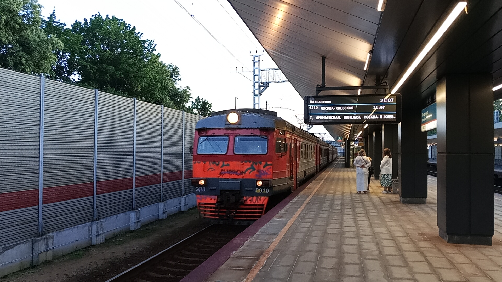

ЭД4-0010
ЭД4-0010 — о дин из последних сохранившихся электропоезд семейства ЭД4, выпущенный Демиховским машиностроительным заводом (ДМЗ). Этот состав стал родоначальником одной из самых массовых моделей пригородных электропоездов на постсоветском пространстве.
Внимание: Состав списан 08.2026 и ожидает утилизации в депо Домодедово.
Общая информация
| Параметр | Значение |
|---|---|
| Дорога приписки | Московская железная дорога |
| Депо | ТЧПРИГ-31 Домодедово |
| Серия | ЭД4 (М) |
| Завод-изготовитель | Демиховский машиностроительный завод (Демихово) 🇷🇺 |
| Заводской тип | 62-301 |
| Построен | 10.1998 |
| Поступил с завода | 1999 |
| Списан | 08.2026 |
| Утилизирован | 09.2026(вагон 001009) |
| Категория | Электропоезда |
| Текущее состояние | Списан / ожидает утилизации в депо Домодедово |
| Составность | 6 вагонов |
Эксплуатация
- С завода поступил в депо Минеральные Воды Северо-Кавказской ж. д.
- 06.2006 — передан в депо Туапсе
- 2009 — передан в депо Белореченская (перевод парка)
- 05.2013 — передан в депо Апрелевка с секцией 000103-04 вместо секции 03-04
- 09.2016 — передан в депо Александров с секцией ЭД2Т-003207-10
- 02.2025 — передан в депо Домодедово (вагоны 01, 09)
История создания
Разработка семейства ЭД4
Демиховский машиностроительный завод приступает к разработке нового семейства электропоездов, призванного заменить устаревшие ЭР2.
Выпуск ЭД4-0010
Первый серийный электропоезд ЭД4 с номером 0010 сходит с конвейера ДМЗ. Составность: 6 вагонов.
Поступление с завода
Состав поступил в депо Минеральные Воды Северо-Кавказской ж. д.
Передача в Туапсе
Передан в депо Туапсе.
Перевод парка
Передан в депо Белореченская (перевод парка).
Передача в Апрелевку
Передан в депо Апрелевка с секцией 000103-04 вместо секции 03-04.
Передача в Александров
Передан в депо Александров с секцией ЭД2Т-003207-10.
Передача в Домодедово
Передан в депо Домодедово (вагоны 01, 09).
Списание
Состав списан. Ожидает утилизации в депо Домодедово.
Технические характеристики
| Параметр | Значение |
|---|---|
| Модель | ЭД4 (М) |
| Номер поезда | 0010 |
| Заводской тип | 62-301 |
| Год постройки | 10.1998 |
| Завод-изготовитель | Демиховский машиностроительный завод (ДМЗ) |
| Количество вагонов | 6 |
| Род тока | Постоянный, 3000 В |
| Конструкционная скорость | 130 км/ч |
| Текущее состояние | Списан / ожидает утилизации в депо Домодедово |
Вагоны и сетевые коды
| № | Сетевой код | Примечание |
|---|---|---|
| 01 | 13410196 | работал в ЭД4М-0095 |
| 02 | 13400460 | 07.2025 работал в ЭД4М-0260 |
| 03 | 13430285 | 08.2021 — консервация ТЧмашевская, 07.2022 списан |
| 04 | 13400478 | до 05.2023 — консервация, 04.2023 списан |
| 09 | 13410204 | работал в ЭД4М-0095 |
| 10 | 13400502 | 07.2025 работал в ЭД4-0005, 01.2026 — в ЭД4М-0328 |
Ремонт
| Дата | Ремонт |
|---|---|
| 2006 | КР-1 Московский ЛРЗ |
| 09.2016 | КР-2 Московский ЛРЗ |
| 10.2019 | ТР-3 депо Санкт-Петербург-Балтийский |
| 10.2022 | КР-1 Московский ЛРЗ (вагоны 02, 10) |
| 12.2024 | КР-2 Московский ЛРЗ (вагоны 01, 09) |
Фотогалерея

📸 pfandrom

📸 pfandrom
Нажмите на фото для увеличения
«ЭД4-0010 открыл эру российских электропоездов нового поколения. Именно с этого состава началась замена легендарных, но устаревших ЭР2 на современные, комфортабельные и надёжные поезда Демиховского завода».